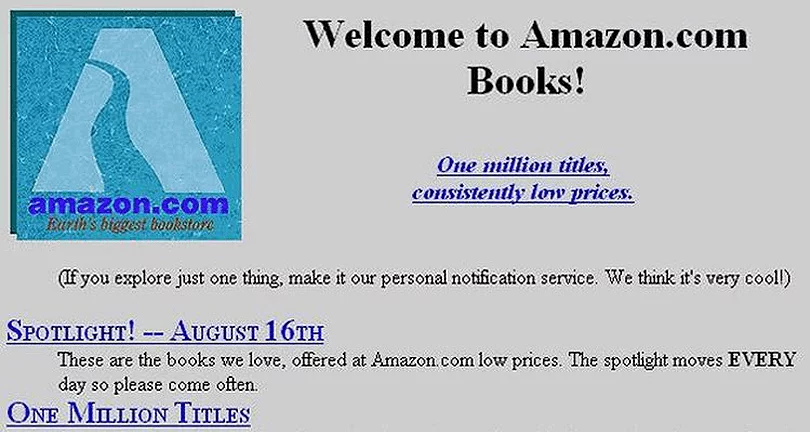

Radio Shack Redo
Learning Goals
- Become aquainted with the history of web design
- Learn to use modern web development 工具
背景
The世界 wide web as we know it has only been around since the mid 1990’s. Early 工具 to develop websites were very limited: there was no CSS or JavaScript and HTML was rendered differently on different browsers. One of the earliest sites was amazon.com.

Quite a different look than today!
Another early site was RadioShack. Their first website in 1996 had a look very similar to websites of that时间。 The hottest design elements were clunky-looking buttons and repeating 背景 patterns.

一份 common 特征 on early sites was a link to a “text only” version of the web page. Because 互联网 connections were so slow, images could be very slow to load! The oversized RadioShack logo and its corresponding buttons are actually one image here: the buttons are activated using an html map 特征, which is still avai实验le today, but rarely used.
<map name="rsmap">
<area shape="rect" coords="8,246,122,297" href="http://www.radioshack.com/rsstorelocator/rszip?1">
<area shape="rect" coords="123,246,240,297" href="http://www.radioshack.com/rsfuture.html">
<area shape="rect" coords="241,246,358,297" href="http://www.tandy.com/contacts/">
<area shape="rect" coords="359,246,475,297" href="http://www.tandy.com/press.html">
<area shape="rect" coords="476,246,599,297" href="http://www.radioshack.com/history/">
</map>
There was very little control over typography and the only fonts avai实验le were those that resided on a visitor’s computer. So a web designer had to be careful to use only very common, standard fonts.
By 1997, RadioShack significantly upgraded the look of their site, and it now looked like this. 笔记 the 3-D spinning “R”, another popular 特征 on websites of that 时间!

To 创建一个 layout like this with columns and rows, the entire page is constructed from an HTML table, with a 1-by-1 pixel image, dot_clear.gif, to control the visual layout of HTML elements on a web page, since the HTML standard at the时间 did not allow this. Tables were not created for this purpose, but designers had few options for controling the layout of the page.
<table border="0" cellspacing="0" cellpadding="0" width="969"><tr valign="top" align="left">
<td colspan="1" width="10"><img src="dot_clear.gif" width="10" height="1" border="0"></td>
<td colspan="1" width="2"><img src="dot_clear.gif" width="2" height="1" border="0"></td>
<td colspan="1" width="35"><img src="dot_clear.gif" width="35" height="1" border="0"></td
...
Since there was still limited choices for fonts, all of the type you see on this page that is not the standard “Times Roman” was created as an image and imported into the web page.
Take a look at some other website designs from the 90’s.
Now you’ll re-design RadioShack’s website (just the 主页 is fine!) using modern web development 工具. No tables, html maps or spinning logos please!
入门
- Log into cs50.dev using your GitHub account.
- Click inside the terminal window and execute
cd. - Execute
wget https://cdn.cs50.net/2022/fall/实验s/8/redo.zipfollowed by Enter in order to 下载 a zip calledredo.zipin your codespace. Take care not to overlook the space betweenwgetand the following URL, or any other character for that matter! - Now execute
unzip redo.zipto create 的文件夹中名为redo. - You 不再 need the ZIP file, so you can execute
rm redo.zipand respond with “y” followed by Enter at the prompt.
实现细节
注意 you’ve received three folders, radio1996/, radio1997/, and radiotoday/. You can explore implementations of Radio Shack’s website from 1996 and 1997, but you’ll ultimately create your own iteration in radiotoday/.
One of the most popular front-end web development 工具 in use these days is Bootstrap. It’s free, 打开-source, and designed to enable responsive development of websites and web apps. It’s built on top of CSS and JavaScript to allow developers to create websites quickly and without having to recreate commonly used 特征s such as interactive buttons, navigation systems, columns and grids.
Start your redesign by trying out bootstrap’s Navbar 特征 to easily 创建一个 custom navigation bar to handle all the 菜单 options. Scoll down on this bootstrap documentation until you see a simple navigation bar with minimal code and copy this code to the top of the body 小组课 of index.html.
<nav class="navbar navbar-expand-lg bg-light">
<div class="container-fluid">
<a class="navbar-brand" href="#">Navbar</a>
<button class="navbar-toggler" type="button" data-bs-toggle="collapse" data-bs-target="#navbarNavAltMarkup" aria-controls="navbarNavAltMarkup" aria-expanded="false" aria-label="Toggle navigation">
<span class="navbar-toggler-icon"></span>
</button>
<div class="collapse navbar-collapse" id="navbarNavAltMarkup">
<div class="navbar-nav">
<a class="nav-link active" aria-current="page" href="#">Home</a>
<a class="nav-link" href="#">Features</a>
<a class="nav-link" href="#">Pricing</a>
<a class="nav-link disabled">Disabled</a>
</div>
</div>
</div>
</nav>
When you run http-server to preview your web page, you’ll see 菜单 items on top such as “Features”, “Pricing”, etc. Change these to represent the appropriate 菜单 items for your RadioShack 主页. You don’t need to 创建一个dditional pages 的se to link to, but if you did, you would change href=# in each of these 菜单 items to link to the appropriage html pages.
下一页, take a look at other bootstrap 特征s. Check out how to create columns without using tables as was done in the 90’s.
You可能想要 to take a look at how to create responsive images that shrink and expand as the page size changes so they look good on any size device.
And while you are thinking 关于 images for your 主页, check out how to 创建一个 carousel to automatically cycle through 更多 than one image.
You are the designer, the design here is up to you. 享受乐趣 and see what you can create! 一份 更多 recent RadioShack logo is included if you want to use it.
Thought 问题
- Why do you think so many designers use Bootstrap, rather than creating their own CSS?
如何测试 Your Code
No check50 for this 作业! To ensure that the code on your pages is valid, you can use this Markup Validation Service, copying and pasting your HTML directly into the provided text box.
如何提交
No need to 提交! This is 练习题.